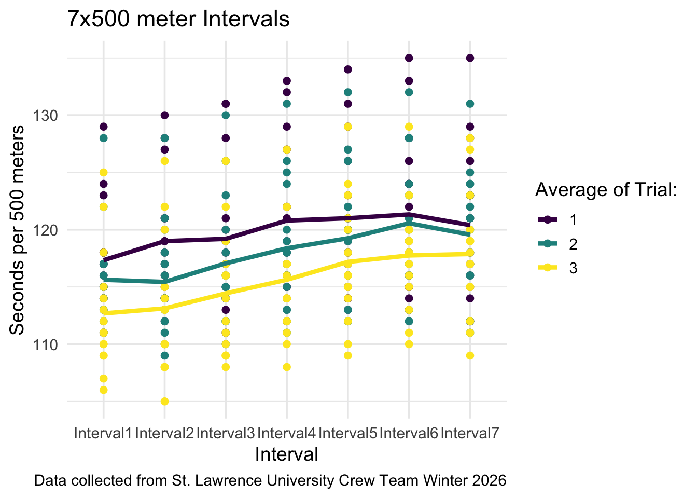
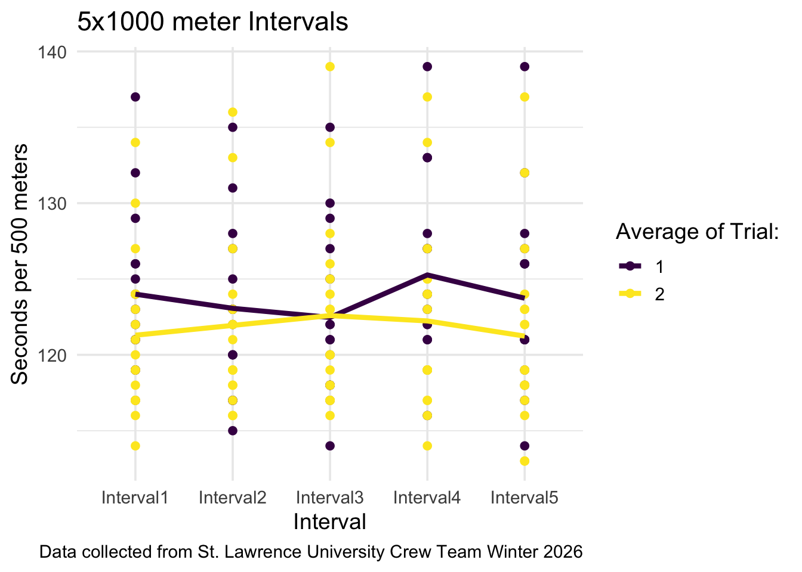
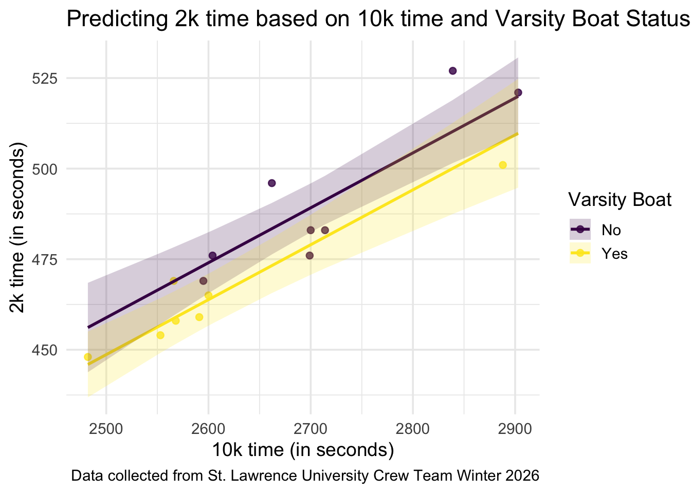
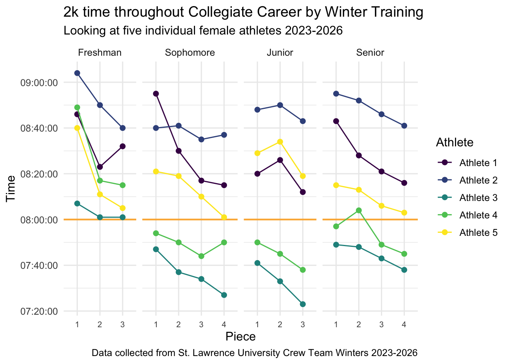

## initial cleaning and wrangling done in excel
library(readr)
library(ggplot2)
library(tidyverse)
library(openintro)
library(ggeffects)
library(broom)
x500sData <- read_csv("500sData2.csv")
x1000sData <- read_csv("1000sData3.csv")
senior2k <- read_csv("Senior2k2.csv")Abstract
This project is an analysis of the St. Lawrence University Women’s Rowing Team’s winter training erg data, as well as a comparison to previous year’s data. The data was collected from each erg piece during winter training and compiled into different data sets by workout. The project compares times and averages of interval pieces of varying lengths as well as creating a linear regression to predict an athlete’s 2k time. It also looks at the 2k test piece progression of 2026 senior athletes. The project includes visualizations to answer questions of interest as well as detailed explanations of the trends seen.
Data and Motivation
The data was collected from the St. Lawrence University Women’s Rowing Team during their 2026 winter training period. Training and practicing during the winter is proven to be difficult for rowing and most climates, especially the North Country, force rowers indoors for the season. The most common practice during the winter training period in rowing is the ergometer, commonly called an erg. The erg mimics the stroke that rowers take in the boat and instantly displays performance metrics to the rower. Metrics shown include the total time and distance of the workout, split per 500m (how long, in minutes and seconds, it takes the rower to complete 500m), and the stroke rate per minute.
The women’s rowing team ergs five times a week and records data on each piece that they complete including interval pieces and longer steady state pieces that build fitness and test pieces that show where their performance is at. This data includes 7x500m intervals, 5x1000m intervals, 2k test pieces, and 10k test pieces.
Variable descriptions for variables across all data sets
| Variable | Description |
|---|---|
ID |
Number indicating athlete |
Average |
Average time per 500m for each interval. |
IntervalX |
Average time for 500m for that interval. |
Rate |
Average strokes per minute during the piece (not included in 1000s). |
ClassYear |
What year the athlete is (Freshman, Sophomore, Junior, Senior) |
Interval |
Which interval (of 7 or 5) the time is for. |
Time |
Time (in seconds) for that interval. |
Trial |
Number indicating which number trial the piece is (first of the season, second, third). |
Mean |
Average time of all athletes per 500m for that interval and trial. |
Name |
Number indicating athlete |
Piece |
Two letters indicating class year and one digit indicating which trial of that training period. |
Time |
Total time to complete 2k (in minutes:seconds) |
Class |
Year of collegiate career the piece was completed during. |
Questions of Interest
How do athletes fare during many short interval pieces compared to fewer, longer intervals?
is there a similar trend between 7x500 and 5x1000?
what could be the explanation for these trends?
What variables best predict 2k time?
- and what does that prediction look like?
What does 2k progression look like over the course of a female athlete’s collegiate rowing career?
- Is the “senior year slump” trend upheld?
Data Importing
Wrangling Data for Graphing
x500_long <- x500sData |> pivot_longer(cols = Interval1:Interval7,
names_to = "Interval", values_to = "Time") |>
mutate("Time" = as.numeric(Time)) |>
mutate("Time" = Time/60) |>
select(ID, Average, Interval, Time, Trial)
x500_line <- x500_long |> group_by(Trial, Interval) |>
summarise(Mean = (mean(Time)))
x1000_long <- x1000sData |> pivot_longer(cols = Interval1:Interval5,
names_to = "Interval", values_to = "Time")|>
mutate("Time" = as.numeric(Time)) |>
mutate("Time" = Time/60) |>
select(ID, Average, Interval, Time, Trial)
x1000_line <- x1000_long |> group_by(Trial, Interval) |>
summarise(Mean = (mean(Time)))
pred_10k_2k <- read_csv("pred_10k_2k.csv") |>
mutate(first10k = as.numeric(first10k)) |>
mutate(second10k = as.numeric(second10k)) |>
mutate(k2 = as.numeric(k2)) |>
mutate(k2 = k2/60) |>
mutate(first10k = first10k/60) |>
mutate(second10k = second10k/60) |>
mutate(v1 = case_when(v1 == 0 ~ "No", v1 == 1 ~ "Yes"))
mod_2k <- lm(k2 ~ second10k + v1, data = pred_10k_2k)
mod_2k |> tidy()
glance(mod_2k)
ggpredict(mod_2k, terms = c("second10k", "v1"))
ggpredict(mod_2k, terms = c("second10k", "v1")) |>
as.data.frame(terms_to_colnames = TRUE) |>
as_tibble()
pred_time <- ggpredict(mod_2k, terms = c("second10k", "v1")) |>
as.data.frame(terms_to_colnames = TRUE) |>
as_tibble() |>
arrange(v1, second10k) |>
mutate(v1 = factor(v1, levels = c("No", "Yes")))
senior_long <- senior2k |>
mutate(Name = factor(Name, labels = paste("Athlete", 1:5))) |>
pivot_longer(
cols = c(FY1, FY2, FY3, SO1, SO2, SO3, SO4, JN1, JN2, JN3, SE1, SE2, SE3, SE4),
names_to = "Piece",
values_to = "Time") |>
mutate(Piece = factor(Piece, levels = c("FY1","FY2","FY3",
"SO1","SO2","SO3","SO4",
"JN1","JN2","JN3",
"SE1","SE2","SE3","SE4")),
Class = case_when(str_starts(Piece, "FY") ~ "Freshman",
str_starts(Piece, "SO") ~ "Sophomore",
str_starts(Piece, "JN") ~ "Junior",
str_starts(Piece, "SE") ~ "Senior"),
Piece = case_when(str_detect(Piece, "1") ~ "1",
str_detect(Piece, "2") ~ "2",
str_detect(Piece, "3") ~ "3",
str_detect(Piece, "4") ~ "4"),
Class = factor(Class, levels = c("Freshman","Sophomore","Junior","Senior"))) |>
group_by(Name)Visualizations and Interpretations
Interval Averages
The team completed a 7x500m interval piece three times throughout their winter training period and a 5x1000m interval piece twice in this time. Trial indicates which session the piece was completed during. 7x500m means that athletes erg 500 meters as fast as they can and then rest for approximately 2 minutes before erging another 500 meters. This is repeated for 7 intervals. 5x1000m intervals were completed twice and use the same setup with a 4 minute rest between intervals.
The points show each individual data point for each interval, coloured by which trial it was completed during. The lines indicate the average of the team for each interval during each trial. They show that, in general, the team got faster each trial. A positive slope indicates a slowing down in pace as the y-axis measures total time taken to complete the interval and a higher number means a longer time.
ggplot(data = x500_long, aes(x = Interval, y = Time)) +
geom_point(aes(group = Trial, colour = factor(Trial))) +
geom_line(data = x500_line, aes(x = Interval, y = Mean,
group = Trial, colour = factor(Trial)),
linewidth = 1.5) +
scale_colour_viridis_d(name = "Average of Trial:") +
labs(y = "Seconds per 500 meters", colour = "AverageTrial",
title = "7x500 meter Intervals",
caption = "Data collected from St. Lawrence University Crew Team Winter 2026")+
theme_minimal(base_size = 14)
One interesting note is that, despite there being a general trend of athletes slowing down throughout the pieces, the 7th interval is a little faster than the 6th in each trial. This is most likely explained by athletes “putting it all out there” knowing that it is their last interval and using that to go faster.
ggplot(data = x1000_long, aes(x = Interval, y = Time)) +
geom_point(aes(group = Trial, colour = factor(Trial))) +
geom_line(data = x1000_line, aes(x = Interval, y = Mean,
group = Trial, colour = factor(Trial)),
linewidth = 1.5) +
scale_colour_viridis_d(name = "Average of Trial:") +
labs(y = "Seconds per 500 meters", colour = "AverageTrial",
title = "5x1000 meter Intervals",
caption = "Data collected from St. Lawrence University Crew Team Winter 2026")+
theme_minimal(base_size = 14)
While the trend for 5x1000m intervals is similar to that of 7x500m, the change in pace is not as drastic between intervals nor trials. This can be explained by the fact that the pieces are longer and athletes tire more throughout each interval (leading to a slower pace average for the interval) as opposed to slowing throughout the piece and having the interval average slow as it would in a 7x500m piece.
Linear Regression for 2k Time
mod_2k |> tidy()# A tibble: 3 × 5
term estimate std.error statistic p.value
<chr> <dbl> <dbl> <dbl> <dbl>
1 (Intercept) 79.8 55.6 1.44 0.176
2 second10k 0.152 0.0204 7.42 0.00000809
3 v1Yes -10.2 5.02 -2.03 0.0649 The coefficient of 0.152 for second10k time indicates that predicted 2k time increases, on average, by 0.15 seconds for each additional second increase in 10k time, as long as varsity boat status is held constant. This makes sense as athletes that are faster in a 10k will have generally faster 2k times, but not by the same rate as the duration of the piece impacts the pace of an athlete.
The coefficient of -10.2 for the v1 variable indicates that athletes in the varsity boat are, on average, going to be about 10 seconds faster in their 2k than those that are not. The p-value is marginally significant but most likely reflects the smaller sample size rather than a lack of effect. The 10 second difference in time is large enough to be meaningful despite the larger p-value.
There may be cause for concern related to collinearity if you assume that varsity athletes will also have faster 10k times. This means that there is a chance that the v1 variable would be confounded and it is important to check the correlation between the variables.
After an analysis of the variables, it is shown that there is not a concern regarding the collinearity between the v1 and second10k. The point biserial correlation between the two variables is |-0.438| which is in the ideal range of 0.3-0.7 indicating that there is no need to worry about the collinearity between variables. This is most likely due ot the fact that the varsity boat athletes are typically indicated by their 2k time and not 10k and there is a disparity in athletes that have a faster 10k compared to 2k. This is because 2k tests require more brute strength while a 10k tests the aerobic endurance of an athlete so athletes are usually higher performers in one compared to another and not both.
ggplot(data = pred_10k_2k, aes(x = second10k, y = k2)) +
geom_point(aes(colour = factor(v1)), alpha = 0.8) +
geom_line(data = pred_time, aes(x = second10k, y = predicted,
group = interaction(v1),
colour = factor(v1)), linewidth = 1) +
geom_ribbon(data = pred_time, aes(x = second10k, y = predicted,
ymin = conf.low, ymax = conf.high, group = interaction(v1),
fill = factor(v1)), alpha = 0.2) +
labs(colour = "Varsity Boat", fill = "Varsity Boat", y = "2k time (in seconds)",
caption = "Data collected from St. Lawrence University Crew Team Winter 2026",
x = "10k time (in seconds)", title = "Predicting 2k time based on 10k time and Varsity Boat Status") +
scale_colour_viridis_d() +
scale_fill_viridis_d() +
theme_minimal(base_size = 14)
Analysis of 2k progression for seniors over 4 years
ggplot(data = senior_long, aes(y = Time, x = Piece, group = Name, color = Name)) +
geom_hline(yintercept = hms::hms(minutes = 0, seconds = 0, hours = 8),
color = "orange", linewidth = 0.8, alpha = 0.8) +
geom_point(size = 2) +
geom_line() +
facet_grid(~ Class, scales = "free_x", space = "free_x") +
theme_minimal() +
theme() +
labs(x = "Piece", y = "Time", color = "Athlete", title = "2k time throughout Collegiate Career by Winter Training", subtitle = "Looking at five individual female athletes 2023-2026", caption = "Data collected from St. Lawrence University Crew Team Winters 2023-2026")+
scale_colour_viridis_d() +
theme_minimal(base_size = 12) +
theme(axis.text.x = element_text(size = 8))
The plot shows the 2k time of 5 senior athletes during each of four winter training seasons (2023, 2024, 2025, and 2026). They completed 3-4 2ks per season and it is graphed in chronological order separated by athlete. There is a general trend in which athletes get better throughout each season yet start the next year slightly slower than when they left off.
One interesting trend to examine is the idea of the “senior year slump”. The team’s coach had noticed that athletes typically performed optimally their junior year and had a regression during their senior year. This is seen in the graph as all but one athlete performed worse during their senior year as compared to their junior year. This could be due to many reasons including burnout, fatiguing, and being busier with other things and ready to move on. While there are many possible reasons for the “senior slump” in erg performance it is evident that it happens to athletes on the team.
The standard goal that female collegiate rowers aim for is being “sub 8”, meaning that their 2k is less than 8 minutes. The orange horizontal line shows where this milestone is to easily compare the performance of the athletes to it.
Conclusion
Final Analysis
There are many trends that can be discussed in this analysis:
There is a similar trend between 7x500 and 5x1000 meter intervals, but it can also be seen that the trend is stronger for 7x500m than 5x1000m intervals. This could be explained by the duration of the piece and the fact that athletes will tire out more during a longer interval so the averages are steadier than during a shorter distance sprint of 7x500 meters.
The most optimal prediction for 2k time uses varsity boat status and 10k time. As 10k time increases, predicted 2k time increases, but at different rates. Varsity boat members are predicted to have a faster 2k than non-varsity boat athletes.
2k times typically improve over the span of the winter training period, and there is a slight increase in total time before there is another improvement. The graph supports the notion that junior year is the peak in performance of athletes, not senior year.
Potential Drawbacks
One of the main considerations when using this data is that there is a very small sample size. The team only consists of about 20 athletes and although most complete each piece, there are still some missing data points due to injury, illness, and absences. A small sample size limits the amount of analysis that can be done.
Because the sample all came from one team there is limited variance in how the pieces are completed. This is because all of the athletes have the same coach (so they are all encouraged in the same way and have the same motivations), they are all using the same winter training schedule, and they utilize the same training facilities.
Appendix
The only usage of AI in this project was to make the x-axis appropriate in the 2k progression graph.
Question asked in Claude AI: “How to get an individual x-axis for each facet panel in R?”
The answer given explained that scales = "free_x" and space = "free_x" are used to have a different scale for each panel of the facet in both facet_wrap and facet_grid.